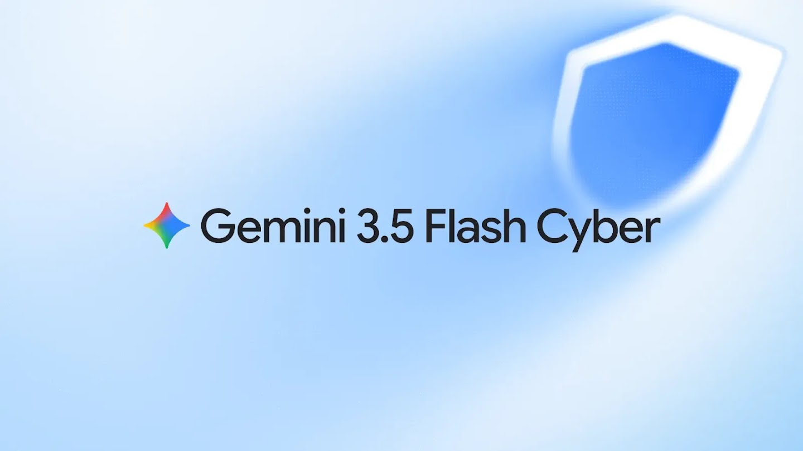
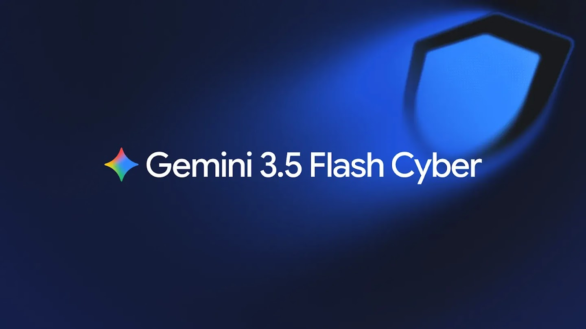

Introducing Gemini 3.5 Flash Cyber
Raluca Ada Popa and Four Flynn


Google has invested in cybersecurity for years, pioneering automated vulnerability discovery to secure the world’s codebases. Tools like CodeMender, our code security agent, can automatically find and fix critical software vulnerabilities. But as AI agents become more capable at finding vulnerabilities faster than defenders can fix them, addressing this global threat requires a highly capable, affordable, and scalable approach.
Today, we’re expanding our longtime efforts to better prepare defenders by introducing Gemini 3.5 Flash Cyber, our lightweight cybersecurity model built on top of 3.5 Flash and fine-tuned to find, validate, and patch vulnerabilities quickly and efficiently, making it more effective at these tasks than Gemini’s mainline Flash models.
Flash’s performance and efficiency makes it an ideal foundation for our cybersecurity model efforts. By building on top of Flash, 3.5 Flash Cyber offers a cost-efficient and highly capable alternative to large, costly cybersecurity models.
Given the dual-use nature of this technology, we have taken an intentional approach to how we deploy 3.5 Flash Cyber. As part of a limited-access pilot program, 3.5 Flash Cyber will be exclusively available to governments and trusted partners via CodeMender soon, expanding over time. This will give frontline defenders a head start in finding and fixing critical vulnerabilities before they can be exploited, while mitigating against broader misuse.
Separately, we're also bringing CodeMender's foundational capabilities directly to customers with generally available Gemini models through the Gemini Enterprise Agent Platform.
The search space problem: The advantage of lightweight models in code security
Finding deep-seated flaws requires exploring an immense execution search space. Relying on a single, expensive call to a massive language model can create a bottleneck. 3.5 Flash Cyber is particularly suitable for finding vulnerabilities where the agent has to scan a large codebase and analyze a large number of codepaths.
CodeMender invokes 3.5 Flash Cyber multiple times, so agents can analyze vastly more code paths to discover and validate vulnerabilities. The sub-agents then produce a single, high-quality report.
Thanks to its speed and affordability, 3.5 Flash Cyber can be easily integrated into frequent scans, time-sensitive launch processes or commit scanning pipelines at scale.
3.5 Flash Cyber benchmark results: an efficient alternative to larger cybersecurity models
We tested 3.5 Flash Cyber on a variety of benchmarks. In particular, we tested 3.5 Flash Cyber on the CyberGym benchmark, which evaluates AI agents against hundreds of real-world software vulnerabilities. Leveraging the low cost of 3.5 Flash Cyber by configuring CodeMender to call 3.5 Flash Cyber up to five times for a single, final report, the overall agent achieved competitive performance against significantly larger models on CyberGym*.
Success Rate on CyberGym (pass@1)
*Competitor results are sourced from provider self-reported scores
We also stress-tested the model’s capabilities beyond CyberGym without safety guardrails. Google’s Big Sleep team independently built an evaluation focused on finding critical and hard to find vulnerabilities in some of the world’s most complex codebases like Chrome and Safari. Here, 3.5 Flash Cyber significantly surpassed mainline 3.5 Flash and 3.6 Flash.
Success Rate on Big Sleep Evaluation (pass@1)
3.5 Flash Cyber was also evaluated on Google Chrome’s production commit scanning pipeline. The vulnerabilities were not publicly disclosed, which ensured this benchmark remained free of contamination for Gemini and competitor models.
The results showed a significant uplift from 3.5 Flash Cyber compared to 3.5 Flash. Note: More recent competitor model versions after Opus 4.6 refuse to fulfill the tasks due to built-in safety guardrails, and therefore are not shown.
Success Rate on Chrome Production Commit Scanning Pipeline (pass@1)
Moreover, 3.5 Flash Cyber consistently discovered more unique vulnerabilities compared with mainline 3.5 Flash and Claude Opus 4.6. When tested on the highly complex V8 JavaScript Engine across a fixed number of invocations, 3.5 Flash Cyber found 55 unique confirmed issues, compared to 47 found by mainline 3.5 Flash and 36 found by Opus 4.6, including 10 issues that the other two models tested did not catch.
Basic cybersecurity models can get stuck in a loop, finding the same issue repeatedly while missing critical vulnerabilities. A strong model casts a wider net, finding a higher number of unique issues.
As we scale the number of invocations, we find that 3.5 Flash Cyber continues to discover new code paths and vulnerabilities.
Real-world application and scaling defenses at Google
Benchmarks are only part of the story. 3.5 Flash Cyber in CodeMender is already finding and fixing vulnerabilities in Google’s internal codebases including Chrome, Android, Cloud, Ads, and YouTube.
The speed of discovery made possible by a lightweight model has delivered measurable impact.
For example, Google’s Cloud Vulnerability Research team used 3.5 Flash Cyber to proactively secure our systems in record time. In just 2 hours, the model uncovered remote code execution vulnerabilities in public APIs and found a memory-corruption vulnerability in a sensitive production service. It then generated a 100% reliable remote-code execution exploit that bypassed standard mitigation techniques like Address Space Layout Randomization (ASLR) and Write XOR Execute (W^X) .
Early feedback from Wiz and Cloud CISO Security Engineering testers confirms the significant capability improvement of 3.5 Flash Cyber over the mainline 3.5 Flash model.
Empowering defenders at scale
Google’s leadership in software security gives us a unique advantage. For example, OSV.dev, a vulnerability database run by Google spanning over 700,000 open-source vulnerabilities, and more than 10 years of OSS-Fuzz results, help us identify the most high quality vulnerabilities.
This allows us to move beyond synthetic cybersecurity examples and teach our models how real security professionals work. Our models learn to operate industry-standard tools, read through millions of lines of code in large-scale projects like Chromium, and independently tackle complex security tasks that require hours of continuous, deep analysis.
By powering CodeMender with 3.5 Flash Cyber, we’re providing a highly capable, scalable, and affordable architecture designed to help more defenders secure software.